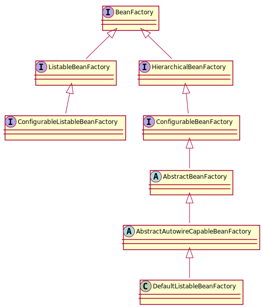

Spring (四) - Bean 的加载

1 2 3 4 5 6
| @Override public <T> T getBean(String name, Class<T> requiredType) throws BeansException { return doGetBean(name, requiredType, null, false); }
|
doGetBean 的整体框架:
1 2 3 4 5 6 7 8 9 10 11 12 13 14 15 16 17 18 19 20 21 22 23 24 25 26 27 28 29 30 31 32 33 34 35 36 37 38 39 40
| protected <T> T doGetBean(final String name, final Class<T> requiredType, final Object[] args, boolean typeCheckOnly) throws BeansException { final String beanName = transformedBeanName(name); Object bean; Object sharedInstance = getSingleton(beanName); if (sharedInstance != null && args == null) { bean = getObjectForBeanInstance(sharedInstance, name, beanName, null); } else { BeanFactory parentBeanFactory = getParentBeanFactory(); if (parentBeanFactory != null && !containsBeanDefinition(beanName)) { return parentBeanFactory.getBean(nameToLookup, requiredType); } if (mbd.isSingleton()) { sharedInstance = getSingleton(beanName, new ObjectFactory<Object>() {}); bean = getObjectForBeanInstance(sharedInstance, name, beanName, mbd); } else if (mbd.isPrototype()) { bean = getObjectForBeanInstance(prototypeInstance, name, beanName, mbd); } else { bean = getObjectForBeanInstance(scopedInstance, name, beanName, mbd); } } if (requiredType != null && bean != null && !requiredType.isAssignableFrom(bean.getClass())) { return getTypeConverter().convertIfNecessary(bean, requiredType); } return (T) bean; }
|
下面我们就一步一步地看一下 doGetBean 方法做的事情:
转换 BeanName:
去除 FactoryBean 的修饰符，取指定 alias 所表示的最终 beanName。
1 2 3 4 5 6 7 8 9 10
| final String beanName = transformedBeanName(name); protected String transformedBeanName(String name) { return canonicalName(BeanFactoryUtils.transformedBeanName(name)); }
|
尝试加载单例:
从缓存中查找加载单例
1 2 3 4
| Object sharedInstance = getSingleton(beanName);
|
getSingleton 方法的实现位于父类 DefaultSingletonBeanRegistry 中:
1 2 3 4 5 6 7 8 9 10 11 12 13 14 15 16 17 18 19 20 21 22 23 24 25 26 27 28 29 30 31
| private final Map<String, ObjectFactory<?>> singletonFactories = new HashMap<>(16); private final Map<String, Object> earlySingletonObjects = new HashMap<>(16); private final Map<String, Object> singletonObjects = new ConcurrentHashMap<>(256); protected Object getSingleton(String beanName, boolean allowEarlyReference) { Object singletonObject = this.singletonObjects.get(beanName); if (singletonObject == null && isSingletonCurrentlyInCreation(beanName)) { synchronized (this.singletonObjects) { singletonObject = this.earlySingletonObjects.get(beanName); if (singletonObject == null && allowEarlyReference) { ObjectFactory<?> singletonFactory = this.singletonFactories.get(beanName); if (singletonFactory != null) { singletonObject = singletonFactory.getObject(); this.earlySingletonObjects.put(beanName, singletonObject); this.singletonFactories.remove(beanName); } } } } return (singletonObject != NULL_OBJECT ? singletonObject : null); }
|
缓存中没有，从头开始 bean 的加载过程
1 2 3 4 5 6 7 8 9 10 11 12 13 14 15 16
| public Object getSingleton(String beanName, ObjectFactory<?> singletonFactory) { synchronized (this.singletonObjects) { Object singletonObject = this.singletonObjects.get(beanName); if (singletonObject == null) { beforeSingletonCreation(beanName); singletonObject = singletonFactory.getObject(); afterSingletonCreation(beanName); addSingleton(beanName, singletonObject); } return (singletonObject != NULL_OBJECT ? singletonObject : null); } }
|
AbstractBeanFactory 调用 getSingleton 方法的时候，传递了 ObjectFactory 对象:
1 2 3 4 5 6 7 8 9 10 11 12 13 14 15
| protected <T> T doGetBean(final String name, final Class<T> requiredType, final Object[] args, boolean typeCheckOnly) throws BeansException { sharedInstance = getSingleton(beanName, new ObjectFactory<Object>() { @Override public Object getObject() throws BeansException { return createBean(beanName, mbd, args); } }); bean = getObjectForBeanInstance(sharedInstance, name, beanName, mbd); }
|
准备创建 Bean
createBean 实际上是由子类 AbstractAutowireCapableBeanFactory 实现的:
1 2
| protected abstract Object createBean(String beanName, RootBeanDefinition mbd, Object[] args) throws BeanCreationException;
|
1 2 3 4 5 6 7 8 9 10 11 12 13 14 15 16 17 18 19 20 21 22 23 24 25 26 27 28
| @Override protected Object createBean(String beanName, RootBeanDefinition mbd, Object[] args) throws BeanCreationException { RootBeanDefinition mbdToUse = mbd; Class<?> resolvedClass = resolveBeanClass(mbd, beanName); if (resolvedClass != null && !mbd.hasBeanClass() && mbd.getBeanClassName() != null) { mbdToUse = new RootBeanDefinition(mbd); mbdToUse.setBeanClass(resolvedClass); } mbdToUse.prepareMethodOverrides(); Object bean = resolveBeforeInstantiation(beanName, mbdToUse); if (bean != null) { return bean; } Object beanInstance = doCreateBean(beanName, mbdToUse, args); return beanInstance; }
|
从 bean 的实例中获取对象
1 2 3 4 5 6 7 8 9 10 11 12 13
| bean = getObjectForBeanInstance(sharedInstance, name, beanName, null); protected Object getObjectForBeanInstance(Object beanInstance, String name, String beanName, RootBeanDefinition mbd) { Object object = getObjectFromFactoryBean(factory, beanName, !synthetic); }
|
1 2 3 4 5 6 7 8 9 10 11 12 13 14 15 16 17 18 19 20
| protected Object getObjectFromFactoryBean(FactoryBean<?> factory, String beanName, boolean shouldPostProcess) { if (factory.isSingleton() && containsSingleton(beanName)) { object = doGetObjectFromFactoryBean(factory, beanName); } else { Object object = doGetObjectFromFactoryBean(factory, beanName); } if (object != null && shouldPostProcess) { object = postProcessObjectFromFactoryBean(object, beanName); } return object; }
|
1 2 3 4 5 6 7 8 9
| private Object doGetObjectFromFactoryBean(final FactoryBean<?> factory, final String beanName) throws BeanCreationException { Object object = factory.getObject(); return object; }
|
原型模式的循环依赖检查
只有在单例情况下才会尝试解决循环依赖。
1 2 3 4 5 6 7 8 9 10 11 12 13 14 15 16 17
| private final ThreadLocal<Object> prototypesCurrentlyInCreation = new NamedThreadLocal<>("Prototype beans currently in creation"); if (isPrototypeCurrentlyInCreation(beanName)) { throw new BeanCurrentlyInCreationException(beanName); } protected boolean isPrototypeCurrentlyInCreation(String beanName) { Object curVal = this.prototypesCurrentlyInCreation.get(); return (curVal != null && (curVal.equals(beanName) || (curVal instanceof Set && ((Set<?>) curVal).contains(beanName)))); }
|
构造器循环依赖
1 2 3 4 5 6 7 8 9
| <bean id="A" class="com.zk.A"> <constructor-arg index="0" ref="B" /> </bean> <bean id="B" class="com.zk.B"> <constructor-arg index="0" ref="C" /> </bean> <bean id="C" class="com.zk.C"> <constructor-arg index="0" ref="A" /> </bean>
|
无法解决，只能抛出 BeanCurrentlyInCreationException 异常
setter 循环依赖
Spring 容器提前暴露刚刚完成构造器注入，但是还未完成其他步骤 (如 setter 注入) 的 bean 来完成的，而且只能解决单例作用域的 bean 循环依赖:
1 2 3 4 5 6 7
| addSingletonFactory(beanName, new ObjectFactory<Object>() { @Override public Object getObject() throws BeansException { return getEarlyBeanReference(beanName, mbd, bean); } });
|
prototype 范围的依赖处理
Spring 容器无法完成依赖注入，因为 Spring 容器不进行缓存 prototype 作用域的 bean，因此无法提前暴露一个创建中的 bean:
1 2 3 4 5 6 7 8 9
| <bean id="A" class="com.zk.A" scope="prototype"> <property name="B" ref="B" /> </bean> <bean id="B" class="com.zk.B" scope="prototype"> <property name="C" ref="C" /> </bean> <bean id="C" class="com.zk.C" scope="prototype"> <property name="A" ref="A" /> </bean>
|
常规 bean 的创建
1 2 3 4 5 6 7 8 9 10 11 12 13 14 15 16 17 18 19 20 21 22 23 24 25 26 27 28 29 30 31 32 33 34 35 36 37 38 39
| protected Object doCreateBean(final String beanName, final RootBeanDefinition mbd, final Object[] args) throws BeanCreationException { BeanWrapper instanceWrapper = null; if (instanceWrapper == null) { instanceWrapper = createBeanInstance(beanName, mbd, args); } boolean earlySingletonExposure = (mbd.isSingleton() && this.allowCircularReferences && isSingletonCurrentlyInCreation(beanName)); if (earlySingletonExposure) { addSingletonFactory(beanName, new ObjectFactory<Object>() { @Override public Object getObject() throws BeansException { return getEarlyBeanReference(beanName, mbd, bean); } }); } Object exposedObject = bean; populateBean(beanName, mbd, instanceWrapper); if (exposedObject != null) { exposedObject = initializeBean(beanName, exposedObject, mbd); } registerDisposableBeanIfNecessary(beanName, bean, mbd); return exposedObject; }
|
(5) 检测 parentBeanFactory
如果缓存没有数据，即当前 XML 配置文件找不到 beanName 所对应的配置，就直接转到父类工厂方法去尝试加载了:
1 2 3 4 5 6 7 8 9 10 11 12 13 14 15 16
| BeanFactory parentBeanFactory = getParentBeanFactory(); if (parentBeanFactory != null && !containsBeanDefinition(beanName)) { String nameToLookup = originalBeanName(name); if (args != null) { return (T) parentBeanFactory.getBean(nameToLookup, args); } else { return parentBeanFactory.getBean(nameToLookup, requiredType); } }
|
(6) 将存储 XML 配置文件的 GenericBeanDefinition 转换为 RootBeanDefinition
所有 Bean 的后续处理都是针对于 RootBeanDefinition 的，所以这里需要做一个转换，转换的同时，如果父类不为空的话，则会一并合并父类的属性:
1 2 3
| final RootBeanDefinition mbd = getMergedLocalBeanDefinition(beanName);
|
(7) 寻找依赖
Bean 的初始化过程可能会用到其他配置的 Bean，那么这个时候就需要先加载依赖的 Bean:
1 2 3 4 5 6 7 8 9 10 11 12 13 14
| String[] dependsOn = mbd.getDependsOn(); if (dependsOn != null) { for (String dep : dependsOn) { if (isDependent(beanName, dep)) { throw new BeanCreationException(mbd.getResourceDescription(), beanName, "Circular depends-on relationship between '" + beanName + "' and '" + dep + "'"); } registerDependentBean(dep, beanName); getBean(dep); } }
|
(8) 针对不同的 scope ，进行 Bean 的创建:
1 2 3 4 5 6 7 8 9 10
| if (mbd.isSingleton()) { } else if (mbd.isPrototype()) { } else { String scopeName = mbd.getScope(); final Scope scope = this.scopes.get(scopeName); }
|
(9) 类型转换
程序到这里返回 Bean 后就已经基本结束了，通常对该方法调用 requiredType 是空的，当然也有可能存在返回的 Bean 是一个 String，但是 requiredType 却传入 Integer 类型，那么就会尝试进行类型转换，Spring 提供了各种各样的类型转换器，用户也可以扩展类型转换器来满足需求:
1 2 3 4
| if (requiredType != null && bean != null && !requiredType.isAssignableFrom(bean.getClass())) { return getTypeConverter().convertIfNecessary(bean, requiredType); }
|
参考